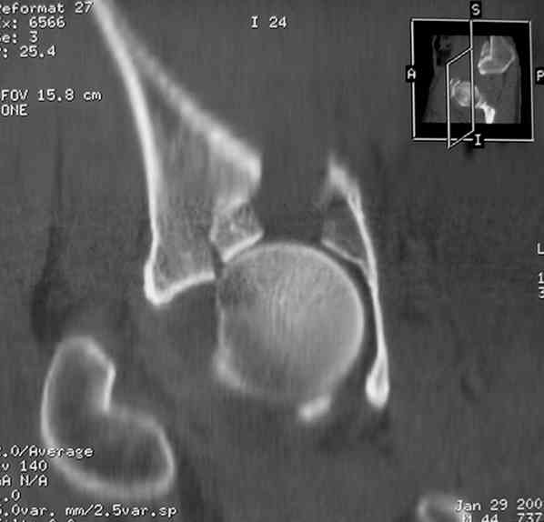
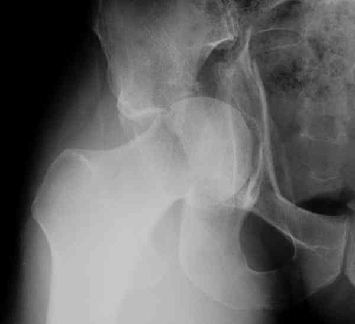
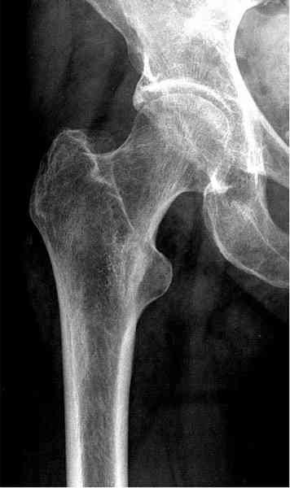
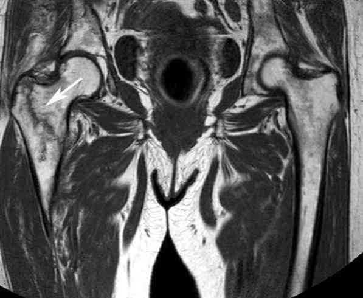
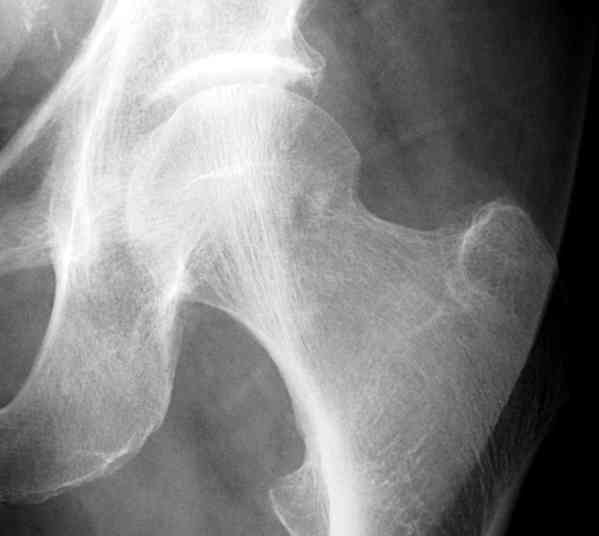
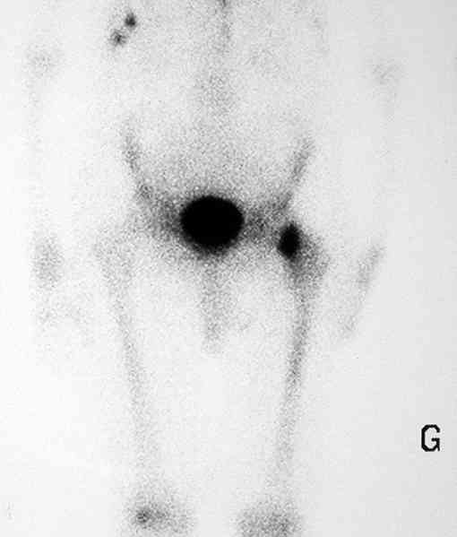
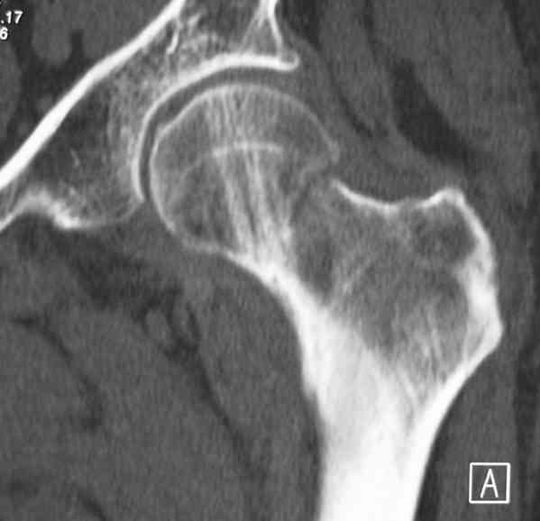
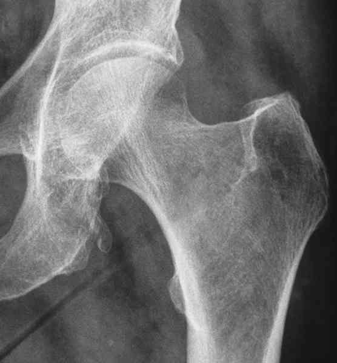
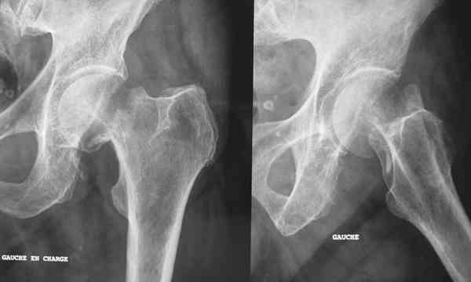
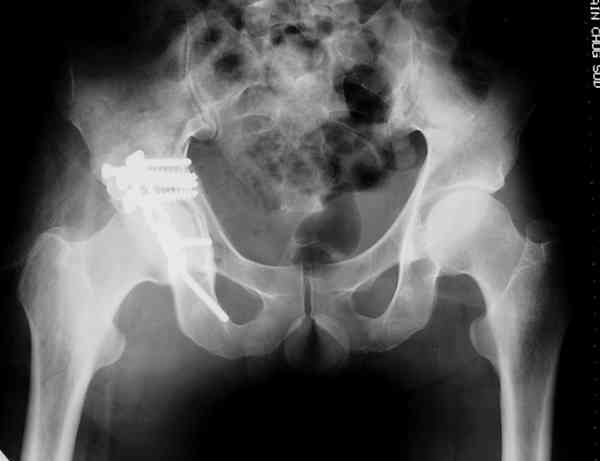

Bienvenue Sur Medical Education
Fractures : cotyle
Spécialité : traumatologie /
Points importants
-
Il s'agit de fractures articulaires graves qui mettent en jeu le pronostic fonctionnel de la hanche
-
Elles sont parfois isolées, parfois associées à des lésions multiples dans le cadre de polytraumatisés ou de polyfracturés
-
Dans ce dernier cas, une prise en charge multidisciplinaire s'impose (urgentiste, anesthésiste-réanimateur, orthopédiste, urologue, chirurgien viscéral, etc.)
Présentation clinique / CIMU
SIGNES FONCTIONNELS
-
Douleur +++ de hanche
-
Impotence fonctionnelle
CONTEXTE
Présentation clinique / CIMU
SIGNES FONCTIONNELS
- Douleur +++ de hanche
- Impotence fonctionnelle
CONTEXTE
Circonstances de survenue
- AVP
- Chute de grande hauteur
- Souvent contexte de polytraumatisme
EXAMEN CLINIQUE
- Appui impossible
- Pas de clinostatisme évident
- Douleur à la mobilisation du bassin et du membre inférieur
- Membre inférieur raccourci si luxation associée ou protrusion acétabulaire grave (pénétration de la tête fémorale dans le pelvis)
- Recherche de complications viscérales pelviennes, vasculaires, urinaires, neurologiques (compression sciatique)
- Examen clinique complet (polytraumatisme)
EXAMENS PARACLINIQUES SIMPLES
- Hémoglobine capillaire
-
Glycémie capillaire
Signes paracliniques
BIOLOGIE
-
Bilan préopératoire
IMAGERIE
Radiologie
- Incidences : bassin de face, 3/4 alaire (qui déroule l'aile iliaque) et 3/4 obturateur (qui déroule le cadre obturateur)
-
Permet :
- de classer la fracture
- d'apprécier le déplacement (congruence entre la tête du fémur et le cotyle) et de préciser si un scanner est utile ou non
Scanner
-
Indiqué pour rechercher :
- une lésion postérieure susceptible de passer inaperçue sur les clichés radiologiques
- une incongruence antéro-postérieure
- un fragment osseux incarcéré dans l'articulation
- ou une impaction localisée du cotyle

_374
Photo
Impactation localisée du cotyle
Diagnostic étiologique
On distingue
- Les fractures de la paroi et/ou de la colonne postérieure
- Les fractures de la paroi et/ou de la colonne antérieure
- Les fractures des 2 colonnes
 _373 Photo Fracture des 2 colonnes du cotyle droit avec déplacement majeur
-
Les fractures complexes
Diagnostic différentiel
LESIONS OCCULTES DU BASSIN
-
Il peut s'agir de « fissures » du sacrum, des branches ilio et/ou ischio-pubiennes, du cotyle et exceptionnellement de l'aile iliaque
-
L'IRM est certainement un examen très performant pour faire le diagnostic de ces lésions
-
La scintigraphie osseuse également mais elle montre une hyperfixation au bout d'une dizaine de jours ce qui est un peu long (durée d'hospitalisation +++) pour des lésions somme toute bénignes
LESIONS OCCULTES DE L’EXTREMITE SUPERIEURE DU FEMUR
-
Il peut s'agir de fractures parcellaires de l'extrémité proximale du fémur telles que sommet du grand trochanter ou petit trochanter ou, ce qui est bien plus grave, de fractures du col du fémur intra-capsulaires ou per-trochantériennes
-
La douleur à l'appui est fortement évocatrice de fracture occulte du col du fémur et doit conduire à une hospitalisation pour réaliser une IRM
 _376 Photo Contusion de la hanche droite avec des RX normales
 _377 Photo Fracture per-trochantérienne non déplacée
- En cas de traumatisme remontant à plusieurs jours avec une consultation tardive, la scintigraphie osseuse a toute sa place pour faire le diagnostic de fracture non déplacée
 _378 Photo Douleur à la marche
 _379 Photo Hyperfixation du col fémoral une fracture
 _380 Photo Fracture de l'extrémité supérieure du fémur
- Les cas de déplacement secondaire à domicile sont fréquents, et très désagréables et pour le patient (qui s'est parfois vu traiter de simulateur...) et pour le médecin responsable du diagnostic initial
 _381 Photo Douleur de la hanche gauche à la suite d'une chute
 _382 Photo Fracture déplacée du col fémoral�?
- Une fois le diagnostic fait, un traitement chirurgical (ostéosynthèse) est souvent indiqué pour éviter un déplacement secondaire
LESIONS TENDINO-MUSCULAIRES
- Elles se voient essentiellement chez le sportif et correspondent à des avulsions tendineuses : ischio-jambiers sur la tubérosité ischiatique, adducteurs au niveau du pubis (moyen adducteur)
-
Les autres lésions tendineuses sont beaucoup plus rares
Traitement
TRAITEMENT PREHOSPITALIER/INTRAHOSPITALIER
Stabilisation initiale
- VVP avec NaCl 0,9%
- Traitement d'un éventuel choc hémorragique
- Réduire d'urgence toute luxation associée de la tête fémorale.
- Antalgiques
- Ces fractures, qu'elles soient déplacées ou non, nécessitent un avis chirurgical
 _375 Photo Radiographie post-opératoire du cas précédent
- Il faut dans un premier temps mettre en traction le blessé (traction trans-tibiale si fracture peu déplacée, traction trans-condylienne si fracture très déplacée)
_930
- - -
Traction transtibiale
Auteur(s) : Jean-Jacques BANIHACHEMI, Dominique SARAGAGLIA
Surveillance
Devenir / orientation
Bibliographie